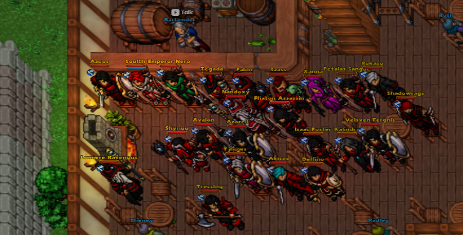
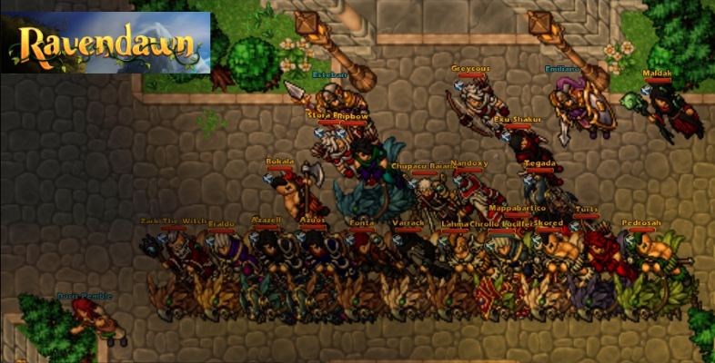
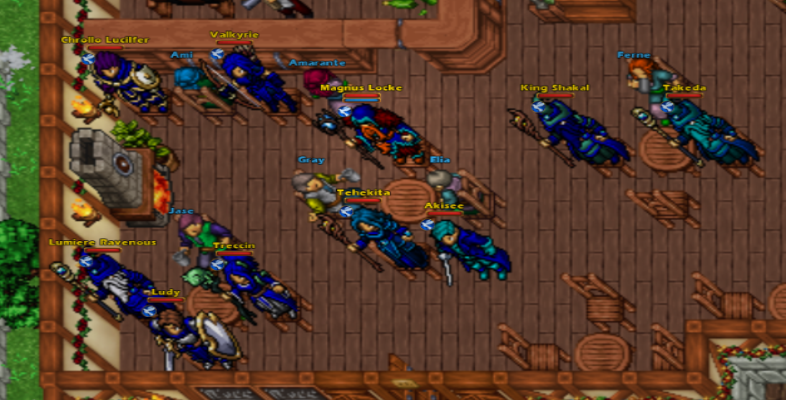
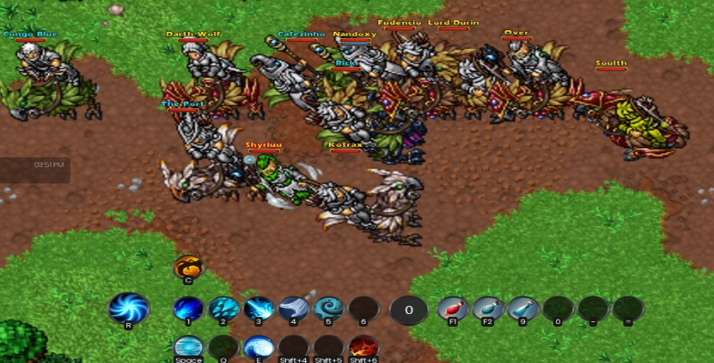

Blindfold Society
Ascenção
Nos dias mais sombrios, quando a pobreza e as pragas cobriam o continente de Ravendawn, os homens mais honestos se transformavam em verdadeiros demônios que vagavam pela superfície espalhando o caos. Viajantes bondosos que paravam para ajudar sensibilizados com a situação, eram constantemente enganados, roubados e mortos.
Porém, levado por esse movimento de caos e desconfiança, alguns homens começaram a viajar com seus olhos vendados. Assim, não veriam o rosto de quem lhes pedisse ajuda, mas poderiam sentir as verdadeiras intenções por palavras e ações. Isso ajudaria a evitar o sorriso de um charlatão ou o rosto coberto de falsas lágrimas de um assassino. A partir dali, os seus olhos nunca mais o enganariam.
Manto Azul
Os Diplomaticos e Cavalheiros fazem uso do manto Azul celeste, justiceiros e estudiosos são a maior parte desta organização. Detentores do conhecimento eles sabem bem como agir em uma missão auxiliando seus pupilos e aspirantes ao cavalheirismo e Diplomacia a tomar o caminho da Ordem.
Manto Vermelho
A elite se encontra vestindo esse manto, Rubro como o sangue de seus inimigos. Poderosos e Destemidos estão em suas maiores caracteristicas. Se você almeja a supremacia e defender o nome de quem esta representando o Manto Vermelho o acolhera de braços abertos.
Manto Verde
O Manto Verde não e pra qualquer um. Seja se arriscando em Masmorras a procura do metal mais precioso, ou até mesmo trabalhando arduamente em suas oficinas e tratando seus animais e plantas na fazenda, esses mestres do oficio farão o possivel para criar os melhores e mais poderosos equipamentos.